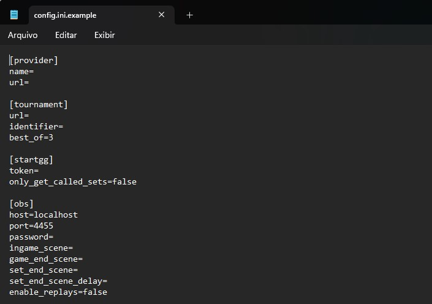
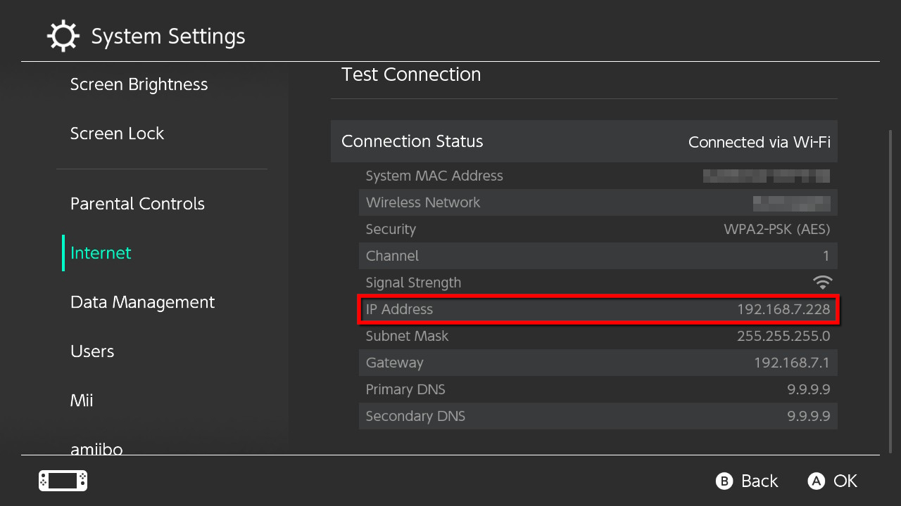
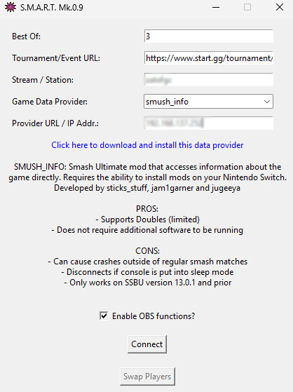
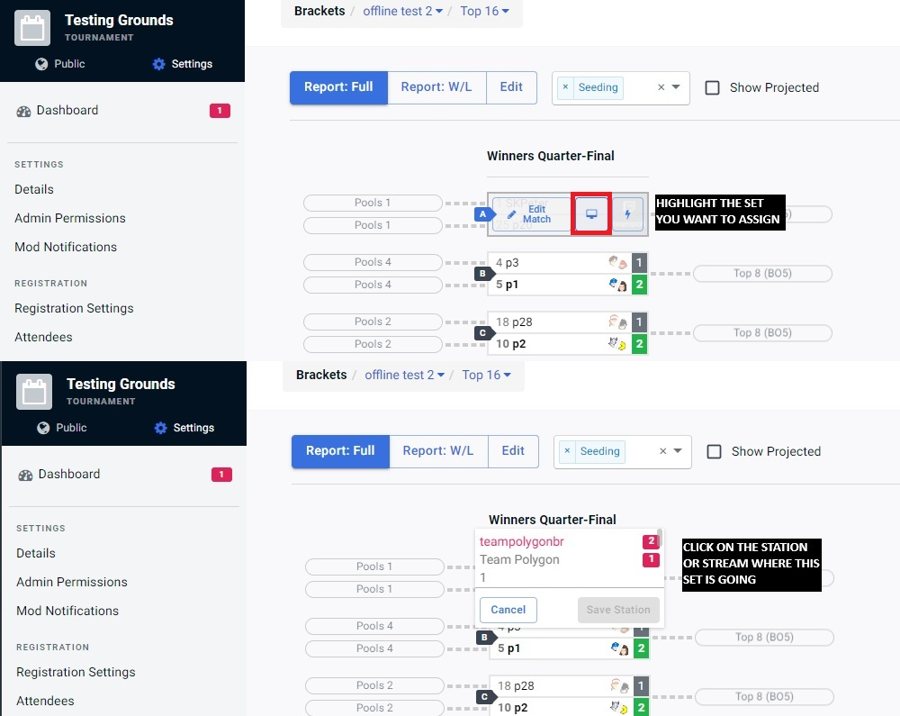
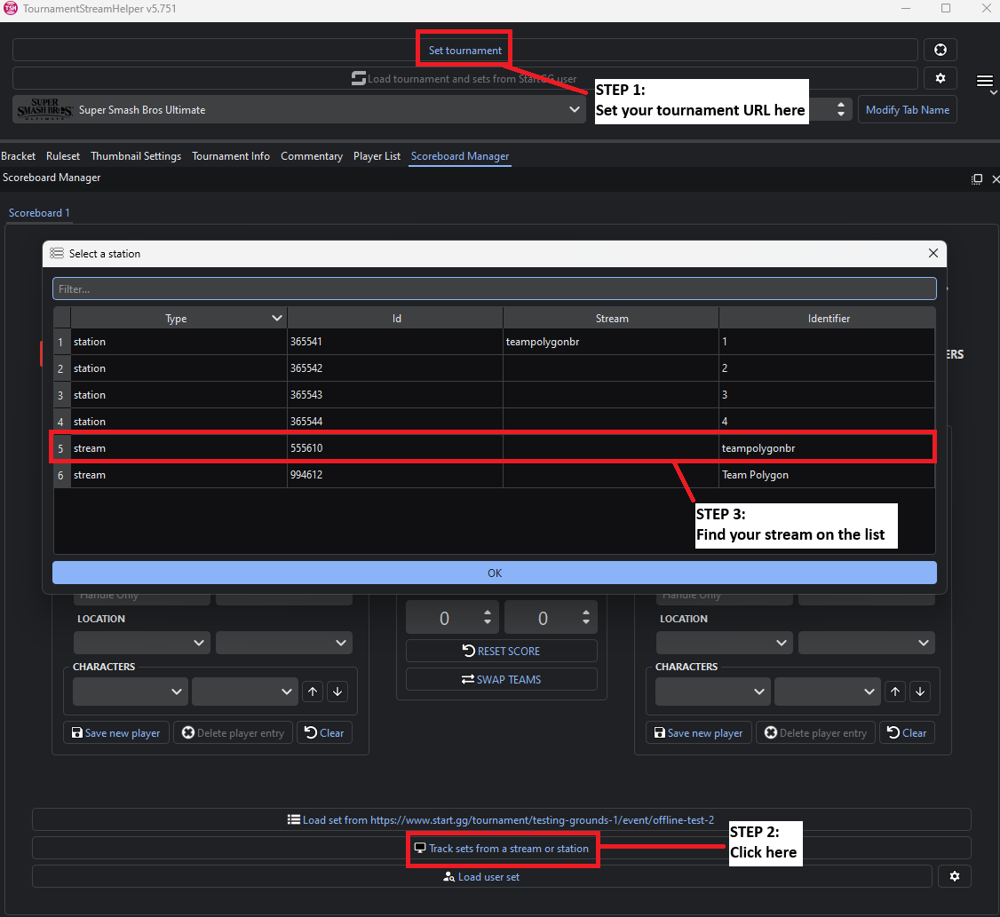
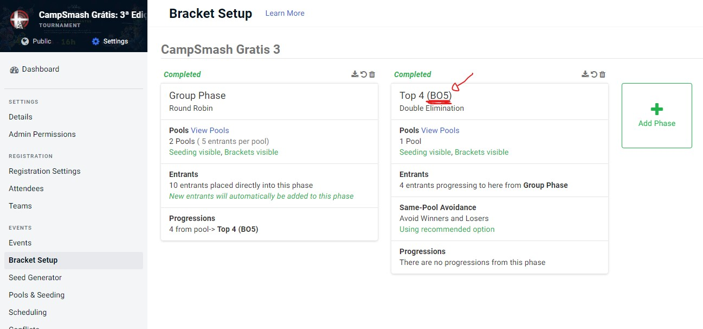
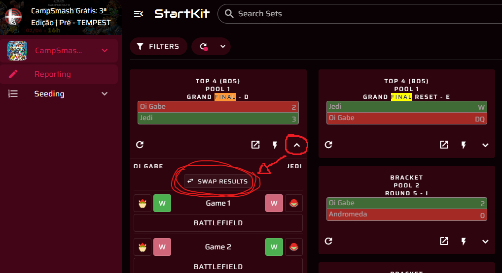

Smash Match Auto Reporter Thing
Welcome! S.M.A.R.T. is an app that is able to use data gathered from Smash Ultimate matches to report them to start.gg.
Make your TOing life easier while you focus on other things of your tournament while matches get automatically reported for you.
S.M.A.R.T. also integrates seamlessly with stream scoreboarding software such as TournamentStreamHelper to keep your stream up to date!
It also records all of your tournament's matches individually and names them accordingly so you can upload them straight to YouTube.
If you'd like to learn more on how it works, feel free to contact us at any time. If you want to get started, refer to the user guide just below!
Please make sure you have all of the requirements before subscribing and downloading S.M.A.R.T.:
If any of these instructions don't feel clear, try going through the more in-depth guide on the Installation and Setup and Usage sections.
Click here to download and install this data provider to get instructions on how to install that mod on your Nintendo SwitchTournament/Event URL fieldProvider URL/IP Addr. field if using smush_info, if using anything else, leave it as blank.ReFramed, you must enable the Statistics plugin and on it enable the Websocket Server
ConnectInstalling and setting up S.M.A.R.T. for the first time takes a bit of work but is relatively simple. First you need to get the S.M.A.R.T. app.
As of right now, the app is on private early access through the monthly subscription here (https://ko-fi.com/teampolygon).
No subsequent monthly payments are required to continue using the app. You should only continue paying for the subscription if you'd like to support future updates to this project and to receive dedicated support.
Once subscribed, you will get access to the download link on our Discord server (https://discord.gg/zecMKvF8b5).
The app currently is only tested on Windows, but should also work on Linux and MacOS - if this is your case, you can contact us on the above Discord server before subscribing to help us test on those platforms.
Alongside the app executable you will find a file called "config.ini".
This file contains settings that usually only need to be defined once. Some of them need to be set before using the app in its full capacity.
Here's a description on all of them:

If you're unsure of the IP Address on your Nintendo Switch, go to Settings on your console and open the "Internet" section.

After going through all the settings on config.ini you should be good to go to open the app.
After downloading the app, you must also get one of the supported data providers. For Smash Bros. Ultimate, these are mods you install on your Nintendo Switch (except for SmartCV as it needs no mods to be installed).
Once you open S.M.A.R.T. the app will show you the avaiable ones and how to install them.
Here's some additional information on how to use the data providers with S.M.A.R.T.:
Once that's done, you should be good to go!
This is how S.M.A.R.T. looks like once you open it:

If you set up your config.ini file prior to this step, all of these fields should be mostly set up. We'll go through them all anyway:
Best Of: How many games a set should go to in order to determine a winner. This can change dynamically based on the start.gg phase - check Additional Features and Tips for how.Tournament/Event URL: URL of the tournament where data will be reported to on start.gg. An example would be: https://www.start.gg/tournament/smash-station-87-1/event/cps-nextgen. The event part of the URL is required if working with stations instead of a stream.Stream/Station: Which setup this instance of S.M.A.R.T. should report to on start.gg. Can be a stream name or a station number. Leave blank to enable Automatic Mode - more info below.Game Data Provider: Select the data provider you want to use. Once a provider is selected, the app will show you what you can or can not do with it, alongside a link to download and install it.Provider URL/Ip Addr.: URL or IP Address of the console where the data will come from. If using providers where the data comes from your own PC, leave this field empty.Enable OBS functions?: Set whether the S.M.A.R.T. app will interact with OBS. OBS settings must be defined on config.ini before enabling.Connect: Connect to the console / data provider.Swap Players: Manually swap the results of the match being played between players.Once clicking on Connect, the app will connect to the console in order to receive data. The console must be on the same network as the computer where S.M.A.R.T. is being run.
If having both devices on the same network is an issue, we recommend setting up a WiFi Hotspot on the computer to which the console can connect to.
You can also have matches be automatically picked up and reported without having to assign them to a stream or anything.
However it is ESSENTIAL that players on your setup use their start.gg tags in-game so the app is able to know which set is currently being played.
If any of the tags don't match to a player that should be playing a set, the match will be considered a friendly and results will not be reported.
If you run a local and have knowledge that some players go by specific tags, you can populate this using the tags.csv file.
By default, S.M.A.R.T. will populate this tag database with data from previously played tournament matches. However you can edit this file as you see fit.
The first column is the in-game tag the player uses. The second column is the start.gg tag the user goes by. Do not include prefixes or clan tags on this tag.
The recommended way to let S.M.A.R.T. report results to you is by indicating to it which matches are to be played on the stream or station before they happen. This page shows you how to do that (https://help.start.gg/en/articles/1465692-adding-streams-and-creating-stations)
You only need to add the number of stations you feel you'll be able to use with S.M.A.R.T. If you're only using it with a stream setup, creating stations is not needed.
Then, once your tournament starts, you must indicate to S.M.A.R.T. which set is to be played on the stream or station before the match starts. Here's how to do it on the bracket page:

You can assign multiple sets for a station or stream and they'll be put in a queue, and S.M.A.R.T. will start reporting results for the first set assigned to that station or stream, automatically reporting results for the next ones as they happen. This can be useful for the Top 8 or Top 4 section of the tournament, where matches are usually called at a specific order.
If at least one of the players is using the same tag in-game as on start.gg, the app will be able to correctly report the results regardless of the side they are playing. Due to this, it's highly recommended to instruct the players at your tournament to use in-game tags that are similar to their start.gg tag when playing on S.M.A.R.T. connected consoles.
If this is not the case and/or for some other reason S.M.A.R.T. is not able to accurately detect the order of players playing in a match, you can fix it using the Swap Players button.
TournamentStreamHelper is a scoreboard app for tournament livestreams. It has a lot of robust features, while also being free to use and open-source.
You can check out TournamentStreamHelper here (https://github.com/joaorb64/TournamentStreamHelper).
S.M.A.R.T. is able to seamlessly integrate with TournamentStreamHelper in order to keep the scoreboard on your tournament stream automatically updated. No additional set up on S.M.A.R.T. is needed for this.
On TSH, all you need to do is use the "follow stream/station" feature.
First, you must enter the URL for your event on the "Set tournament" button, then click on "Track sets from a stream or station" on the bottom.
If your stream or station is not visible on the list, make sure it was correctly created on your tournament in start.gg. Sometimes streams won't show on the list unless at least one set is assigned to it.
Once that's done, TSH will automatically update the score once a game ends, and also update to show information on the next set once the current one ends.

Usually as tournaments go on, sets in your event will change from Best of 3 to Best of 5 on the finals phase of your event, for example.
In order to remove the need to keep the Best Of setting updated on your event, S.M.A.R.T. is also able to update this value based on which phase the currently assigned set is on.
start.gg doesn't let you configure the "Best Of" setting of a phase or a round for offline events, but we can work around this by setting a "Best Of" abbreviation on the phase name. S.M.A.R.T. will then detect it and update the value accordingly.
Once you create the phase where all sets are supposed to be Best Of 5, for example, just add "BO5" to the name and you should be all set.

If this happens, it's either due to the console being put into sleep mode or staying on the HOME menu for too long. This can make the data providers stop working.
Closing the game and opening it again restarts the provider and you should be able to connect to the console again.
If you need to swap results of previous sets, we recommend using StartKit (https://startkit.gg/) where a "Swap Results" button should be available for all completed sets.

Feel free to reach us on our Discord server (https://discord.gg/zecMKvF8b5) if you have any questions, Dedicated support and feature suggestions are currently only available to monthly supporters.
You can also DM us on X/Twitter (https://x.com/teampolygonbr) or send us an email (teampolygonbrasil@gmail.com)